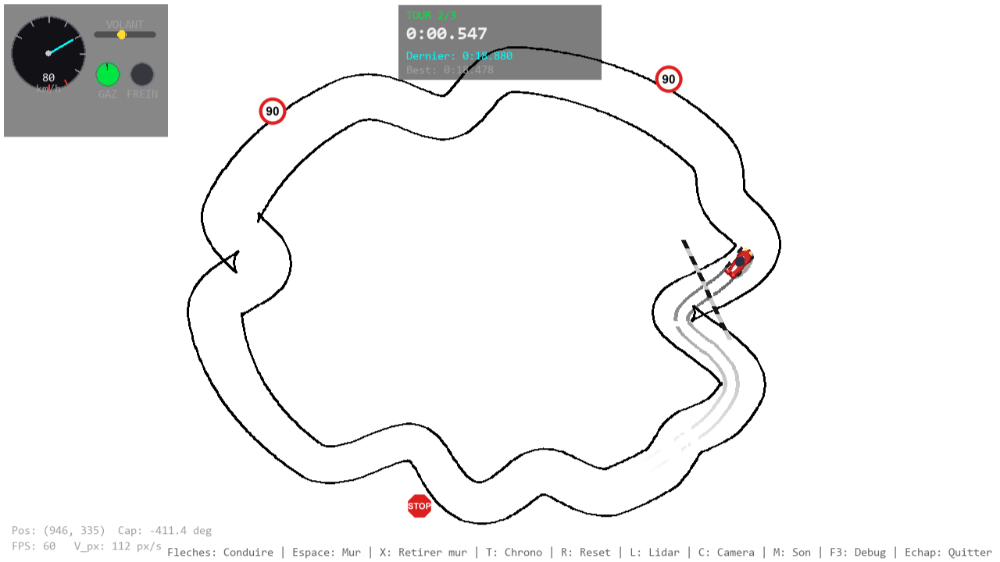
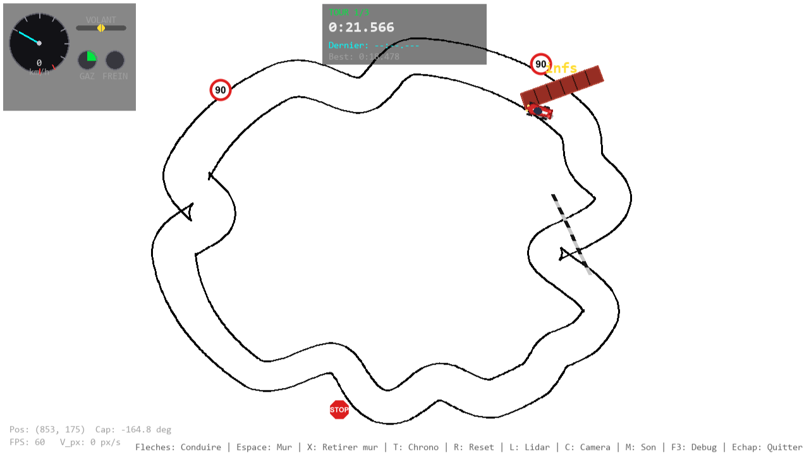
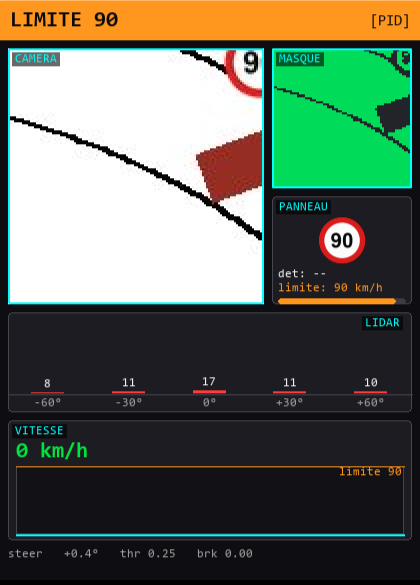
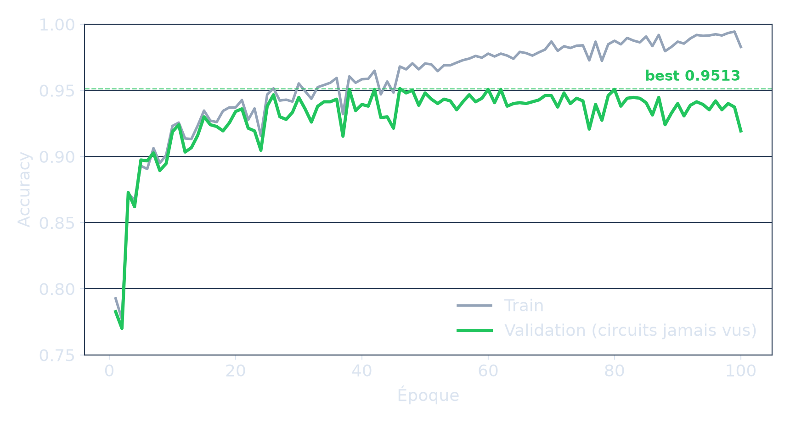
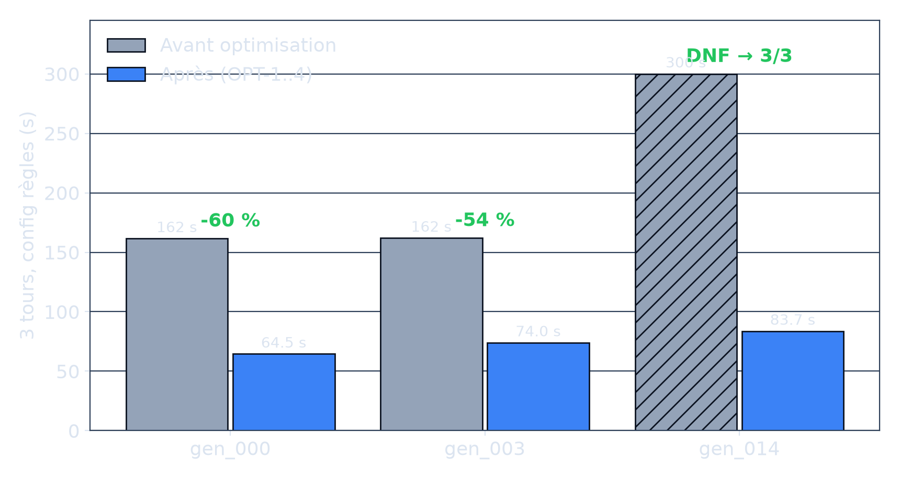
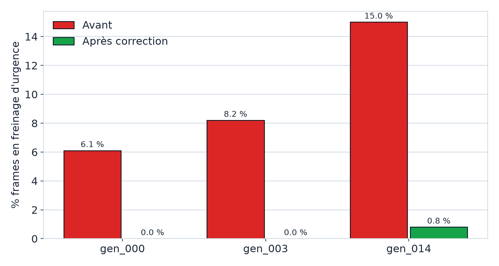
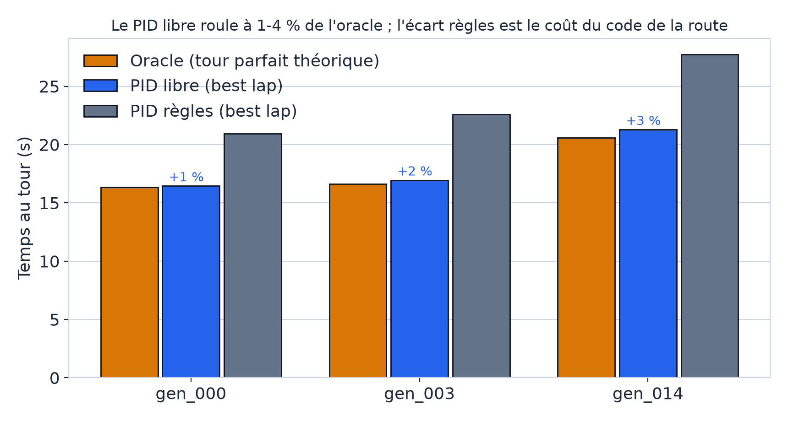
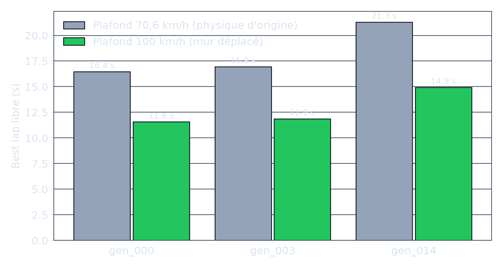
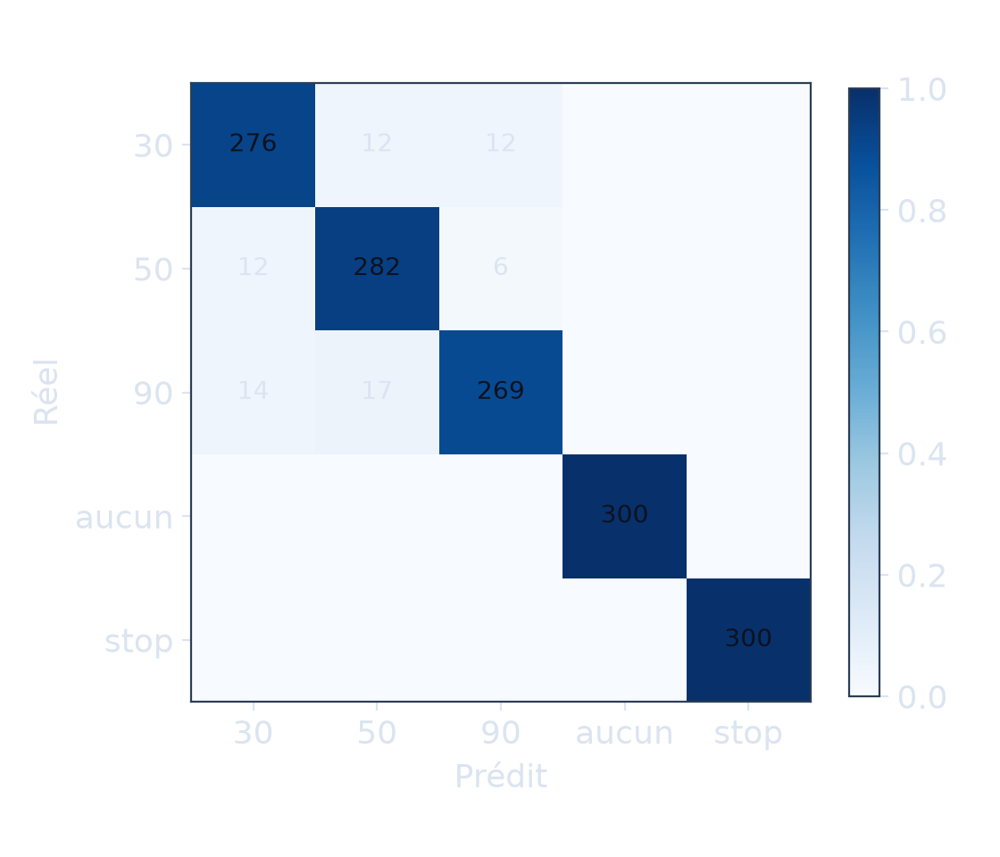

Jumeau numérique automobile : conduite autonome sur circuits inconnus
Charles · Nohlan · Lorenzo
Soutenance M1 · Juillet 2026
Deux processus, deux mondes
SIMULATEUR
la vérité terrain
Physique, circuit, chrono
Panneaux, murs dynamiques
Rend les capteurs au pilote
PILOTE IA
aveugle, sauf ses capteurs
Une caméra de 128 pixels
Un lidar à 5 rayons, sa vitesse
Décide : volant, gaz, frein
Simulateur · course

Capture réelle · tour 2/3 · 80 km/h
Le pilote ne triche jamais : il ne voit que ce qu'une vraie voiture verrait.
Architecture client-serveur (ZeroMQ)
SIMULATEUR serveur
image caméra · lidar · vitesse
volant · gaz · frein
PILOTE client
Deux programmes indépendants : le simulateur reste jouable au clavier sans pilote
60 échanges par seconde : les capteurs dans un sens, les commandes dans l'autre
Un monde qui vit
Mur · arrêt net

Le mur apparaît devant la voiture · durée de vie 6 s
Physique « bicycle » le modèle du sujet (4 équations), plafond calibré à 100 km/h
Mur dynamique apparaît devant la voiture, visible du lidar et de la caméra
Chronomètre 3 tours détectés au passage de la ligne d'arrivée
Panneaux positionnés automatiquement le long de la piste, visibles par la caméra
+ sprite voiture, sons moteur, traces de pneus qui s'estompent, compteur à cadran
Percevoir la route
vue caméra
→
masque route
Caméra + masque · réel

Le vrai couple caméra / masque du dashboard pilote
U-Net entraîné from scratch (< 1 M params) : IoU 1,0000 sur 5 circuits jamais vus.
Un score parfait, c'est d'abord un signal d'alarme. En vérifiant, on a vu
qu'il avait appris un seuillage de luminance (0 pixel d'écart). On l'a donc remplacé
par ce seuillage : résultat identique, coût d'environ 10 µs. Le modèle entraîné reste
disponible si le visuel se complexifie.
Les convolutions extraient la forme, puis les couches denses décident. Les
fonctions de sortie (tanh, sigmoid) bornent les commandes : le volant ne
peut pas dépasser ±45°, le gaz reste entre 0 et 1.
Conduire : apprendre par imitation
30/30
circuits validés, 0 % hors-piste
Behavioral cloning d'un PID qui fait des tours propres (loss MSE)
Entrée : masque 64×64 + lidar, jamais l'image brute → le CNN ne voit que la forme
Sortie : volant (MAE 1,80°) et gaz (MAE 0,056), en régression
Filet de sécurité : retour PID à tout moment
Limite connue de l'imitation : le réseau ne dépasse pas son professeur, il
reproduit sa conduite telle qu'elle était au moment de l'enregistrement. Pour aller
au-delà, il faudrait passer au renforcement.
Généraliser : la consigne n°1
« Souvent la solution ne généralise pas et ne permet pas d'exécuter
la conduite sur différents circuits. » (l'avertissement du sujet)
Split train/validation par circuit : aucune évaluation sur du déjà-vu. Le CNN ne voyant que son environnement proche, l'important est de varier les géométries locales
Lire les panneaux, et obéir
Détection repérage du rouge dans l'image
→
Classification réseau pré-entraîné (MobileNetV2)
→
Confirmation 3 images d'affilée (hystérésis)
→
Régulateur 30 · 50 · 90 · STOP 0,8 s
Accuracy · 100 époques

1er essai : 0,83→image agrandie : 0,90→0,00 sur circuits jamais vus
« Le bug ML n'était pas dans le ML »
Symptôme en démo : un panneau 30 lu 90, confiance 1,00
champ caméra 128 px
30
panneau lu : …
La caméra cadre un carré fixe autour de la voiture : un panneau trop décalé
sur le côté sortait du champ. Un « 30 » est réellement ambigu : le modèle répondait juste.
Correctif mesuré : panneaux replacés dans le champ + rejet des images tronquées
→ confiance 0,94 et plus. Leçon : instrumenter avant d'accuser le modèle.
Des temps divisés par deux, à règles constantes
Temps 3 tours · gain -54 à -60 % · gen_014 d'abandon à 3/3

Urgence parasite · 15 % → 0,8 %

Oracle · le pilote à 1-4 % du tour parfait

1Freinage fantôme corrigé ne freine que si un impact est réellement possible
2Pilote débridé plein gaz autorisé, distance de sécurité ajustée
3Perception accélérée classification des panneaux optimisée
4Règles précisées STOP 0,8 s · limite bornée à sa zone
Mesuré au banc (vrais tours, pas de temps fixe, tout archivé) · l'oracle = le tour parfait théorique, la borne physique
Démonstration en direct
Un tour réglementaire : 50,0 km/h pile sous la limite 50
Arrêt STOP exécuté depuis ~95 km/h
Mur surgi à vitesse de croisière → arrêt net, zéro contact
Épingle à 70 km/h, braquage complet, sans freinage d'urgence
Dashboard pilote en temps réel
Circuit gen_014, celui qui ne finissait pas ses trois tours avant l'optimisation
« Nous savons pourquoi nous ne pouvons pas aller plus vite. »
70,6km/h
Le plafond restant était physique, pas logiciel : l'oracle l'a
démontré. On l'a alors relevé de 70,6 à 100 km/h, par décision d'équipe.
Quand le mur gênait le produit, c'est le mur qu'on a déplacé.
La suite est déjà chiffrée : trajectoire de corde (6 à 9 %
de gain identifiés), physique indépendante du framerate, ré-entraînement du
réseau de conduite sur le pilote optimisé.
Plafond · 70,6 → 100 km/h

Best lap libre · mur déplacé, plafond porté à 100 km/h
Freins logiciels retirés temps divisés par deux
→
Mur physique atteint 70,6 km/h, prouvé par l'oracle
→
Mur déplacé, par choix plafond porté à 100 km/h
Merci. Place aux questions.
Annexes
Matériel pour les questions (flèche ↓)
A1 · Pourquoi pas du RL end-to-end
A2 · La classe « aucun » et les murs
A3 · Variance d'entraînement & reproductibilité
A4 · Protocole de mesure détaillé
A5 · Méthode : décisions tracées
A1 · Pourquoi pas du RL end-to-end ?
Temps d'entraînement long, surapprend le circuit d'entraînement ; or le critère est la généralisation
Pipeline perception → contrôle : chaque étage se valide indépendamment (masque, commandes)
Lisible en soutenance : un RL est une boîte noire
Décision D1, actée en février et jamais regrettée
A2 · La classe « aucun » et les murs
Le dataset « aucun » contient des crops de mur brique texturés, la caméra pilote voit un aplat
Sans conséquence mesurée : le rouge brique (~150-180) reste sous le seuil du détecteur (190) : le classifieur n'est jamais sollicité
Vérifié en boucle fermée : zéro déclenchement sur mur pendant tous les scénarios
A3 · Variance & reproductibilité
Val accuracy du classifieur : 0,90-0,95 selon la seed (0,9513 committé) ; seuil d'échec dur à 0,90 (bascule GTSRB, jamais déclenchée)
Tout est régénérable : circuits (seed 1000), sidecars panneaux (seed par nom), dataset, entraînement ~4 min CPU
Modèles .pth versionnés : clone et ça tourne
Matrice de confusion · 5×5

Classes aucun et stop parfaites (300/300)
A4 · Protocole de mesure
Headless, dt fixe 1/60 : temps simulés déterministes, indépendants du CPU
Par run : temps/tour, best lap, % arrêt, % urgence, % hors-piste, arrêts STOP